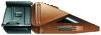

Nenebek
Note
Riciclati
Episodi
Final Mission

Shuttle minerario della lunghezza di 5 metri, precipitato su Lambda Paz.
Note
Gli strumenti di controllo
arcaici
del
Nenebek
sono ispirati a quelli degli space shuttle della NASA.
Riciclati
Il modellino del
Nenebek
è lo stesso utilizzato per lo shuttle
j'naii
Taris Mun
di
The Outcast
, per la nave temporale di Rasmussen in
A Matter of Time
e per lo shuttle di classe
Toron
in
Gambit - Part II
.